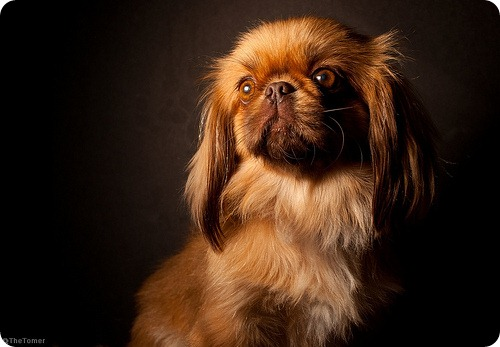
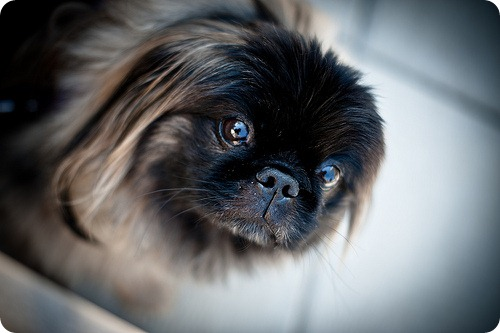

Дивлячись на це дивна істота з мавп’ячої мордочкою і розкішної, підмітає підлогу, гривою, важко повірити, що воно має щось спільне з собачим родом. Зовнішність пекінеса дивовижна і забавна, і мало у кого вистачить фантазії, щоб припустити, якими шляхами мати- природа створила цю тваринку. Втім, швидше за все, без чарівництва тут не обійшлося.
Відомо, що на землі пекінес існує вже близько двох тисяч років і є однією з найдавніших порід собак. Про нього складено чимало легенд. Одна з них оповідає про те, що пекінес є плодом любові мавпочки і лева. Заради коханої цар звірів пожертвував своєю міццю й силою і попросив чарівника зменшити його в розмірах. Незабаром у цієї пари народилося дитинча — пекінес, маленька собака з великим і хоробрим серцем справжнього лева.
Згідно з історичними джерелами, предками пекінеса були собаки породи «широкомордий тієї». В епоху правління династії Манчу був виведений особливий вид тоя, виключно малих розмірів — так звана, «собака — муфточка», що стала гідною прикрасою шикарних нарядів придворних дам.
Однак, не потрібно думати, що якщо все життя пекінеса проходила на шовкових подушках, в розкоші і ласках, то він перетворився на зніжену собачку з «плюшевим» характером. Не забувайте, що у цього малюка левине серце, а значить, сильний, незалежний і часом впертий характер, і він вимагає до себе особливого ставлення. З цієї причини пекінес — це собака для дорослих людей, які дійсно здатні виявляти до неї належну повагу і навіть повагу.
Сьогодні стандарти породи диктує Великобританія. У 1860 році Пекін був захоплений європейськими військами, і пекінесів імператорського палацу вивезли до Англії. А оскільки нікому, крім імператорської сім’ї, під страхом смертної кари, тримати цих собак не дозволялося, то в Китаї вони просто зникли.
Цікаво, що незважаючи на свою давню історію, ця порода дійшла до наших днів фактично в первозданному вигляді. Сьогодні, як і тисячоліття тому, пекінес — це маленька собака з плоскою мордочкою, великими опуклими очима, видатної вперед щелепою і довгою, струмує до підлоги, шерстю.
Людям, які вирішили обзавестися пекінесом, важливо розуміти, що ця собака потребує великої уваги через свого бойового і часом безрозсудного характеру. Вона не роздумуючи полізе в бійку з будь-яким суперником — незалежно від його розмірів і фізичної сили. Особливо часто у пекінесів страждають очі, які через коротку мордочки погано захищені.
Види, стандарти і різновиди
В інтернеті та газетах повно оголошень про продаж собак породи королівський пекінес, або, як їх ще називають, імператорський пекінес. Згідно стандартам породи подібних різновидів пекінесів не існує — це звичайнісінькі пекінеси. Недобросовісні продавці заробляють гроші, підвищуючи ціну за «високопорідний» собаки. Ще одна псевдоразновідность пекінесів — карликові пекінеси або міні- пекінеси. Насправді ж це племінний брак. Такі екземпляри цілком мають право на життя, однак не допускаються до виставок і племінного розведення, так як не відповідають стандартам породи.
Вибір цуценя пекінеса
До покупки щеняти пекінеса необхідно поставитися з усією серйозністю і відповідальністю. Не слід заводити пекінеса в будинку, де є діти молодше 5 років, так як пекінес не терпить поводження з собою як з іграшкою. Також не варто підносити цуценя пекінеса в дар на свята, навіть якщо такий «подарунок» був узгоджений з одержувачем, так як цуценяті на новому місці будуть необхідні комфорт, максимум уваги і спокійна обстановка.
Перед тим як приступити до вибору цуценя, поговоріть з заводчиком, дізнайтеся про родовід цуценя. Оцініть умови утримання собак — в приміщенні повинно бути чисто, не повинно бути неприємного запаху. Потім огляньте послід в цілому: всі цуценята повинні бути здоровими і рухливими. Вибравши «свого» цуценя, уважно вивчіть його на предмет відповідності стандартам породи і фізичного здоров’я. Очки маленького пекінеса повинні бути ясними, блискучими, без виділень, вуха також повинні бути чистими, хвостик піднятий над тулубом. Обов’язково отримаєте у продавця інформацію про щеплення цуценя, рекомендації з догляду та годування.
Особливості утримання, догляд, здоров’я
Красива «шубка» — одне з головних достоїнств собачок породи пекінес. Догляд за шерстю пекінеса не так вже складний. Достатньо лише регулярно її розчісувати, а під час линьки знімати відмерлі волоски мокрою губкою. Використання спеціальних аерозолів або тальку полегшить розчісування і розплутування ковтунів. Будьте обережні розчісуючи чорну галявину на вухах — вирваний в цьому місці жмут шерсті відросте нескоро. Також необхідно підстригати шерсть навколо подушечок лап, так як вона доставляє собаці дискомфорт при ходьбі.
Регулярно подрезайте кігті вашому вихованцеві за допомогою спеціальної когтерезкі, яку можна знайти в будь-якому зоомагазині. Через особливої будови мордочки пекінеса, природні виділення з очей скупчуються в куточках очей і вздовж перенісся, доставляючи вихованцеві дискомфорт. Необхідно щодня промивати складки, розташовані по обидві сторони перенісся, спеціальним розчином.
Не забувайте також про вуха тварини. У зоомагазинах можна знайти великий асортимент засобів для чищення вух. Альтернатива їм — 3 % -й розчин перекису водню.
Що стосується купання пекінесів, тут немає єдиної думки. Деякі купають собаку пару раз на рік, інші — у міру забруднення. У будь-якому випадку використовуйте для купання тільки спеціальний шампунь для собак. Крім того, можна робити «сухе» купання. Для цього існують спеціальні порошки, які, до речі, цілком можна замінити звичайною дитячою присипкою. Порошок ретельно втирається в шерсть собаки, а потім вичісується.
У віці 10 місяців пекінеса можна починати годувати двічі на день. З раціону можна повністю виключити молоко, але не сир і кисломолочні продукти, які потрібні тварині протягом усього життя. У будь-якому віці категорично не рекомендується годувати пекінеса солодощами і будь-якими іншими цукровмісних продуктів. Також виключіть макарони і білий хліб. З ласощів ви можете порадувати пекінеса фруктами, невеликою кількістю меду, підсушеним чорним хлібом.
У раціоні пекінеса абсолютно неприпустимі прянощі, копченості, жирна їжа, вершкове масло. Занадто гарячий і холодний корм сприяє захворювань ШКТ, тому їжа повинна бути кімнатної температури. Солі в собачому меню повинно міститися в 10 разів менше, ніж у людському.
Раціон дорослої особини повинен на третину складатися з сирого м’яса та морської риби. Свинину, баранину, а також ковбасу та сосиски виключити зовсім, курку і яловичі субпродукти давати тільки після варіння. Корисні для здоров’я пекінеса хрящі, а кістки з курки і риби необхідно ретельно видаляти.
Якщо ви не хочете вдаватися в усі ці подробиці, «натуральний» корм цілком можна замінити готовими сухими або консервованими собачими кормами.
Особливості в’язки пекінеса
Особливості фізичної будови пекінесів викликають певні складності при в’язці і пологах. Краще, якщо при цих процесах буде присутній досвідчений ветеринар, який зможе надати при необхідності екстрену медичну допомогу.
Так, в процесі в’язання утруднене у зв’язку з особливостями будови морди дихання і прилив крові до статевих органів можуть привести до недостатнього постачання мозку киснем, а отже втрати свідомості. У деяких випадках можлива короткочасна зупинка серця. Крім того, при пологах у сук пекінесів часто виникають ускладнення через невідповідність розмірів голови плода розмірами родових шляхів.
Статева зрілість у кобеля настає у віці від 6-7 до 10-12 місяців. Однак, у більшості країн заборонено використовувати для розмноження пекінесів молодше 10-12 місяців.
Суки пекінеса готові до в’язки з першої течкой, яка настає в період від 6 до 10-11 місяців. Не рекомендується відкладати першу спаровування, оскільки через відбуваються в будові скелета змін, велика ймовірність, що сука не зможе народити самостійно і доведеться робити кесарів розтин. Звичайна тривалість вагітності пекінеса варіюється в межах 53-71 днів: чим більше щенят, тим раніше почнуться пологи.
Одяг для пекінеса
Незважаючи на шикарну власну «шубку», в сильні морози пекінеси все ж потребують теплою одежинці. Якщо ваш вихованець часто хворіє отитом, надягайте на нього шапочку, яка захистить вушка тварини. Взимку вулиці міст посипають різними реагентами, і, щоб уникнути неприємностей, краще взувати пекінеса в черевички для собак.
Спеціальний одяг для дощової погоди або легкі літні дрібнички збережуть шерсть вашого вихованця красивою і чистою. У підібраною за розміром одязі собака буде почувати себе зручно і комфортно.
Розплідники і клуби
Пекінес — офіційно визнана і зареєстрована порода. У Росії існує національний клуб породи, регулярно проводяться моновиставка собак. У Москві, Петербурзі, регіонах існують приватні клуби породи пекінес, а також розплідники, що займаються племінним розведенням тварин. Досвідчені заводчики завжди допоможуть вам вибрати цуценя, поділяться порадами, дадуть рекомендації по догляду за пекінесами.